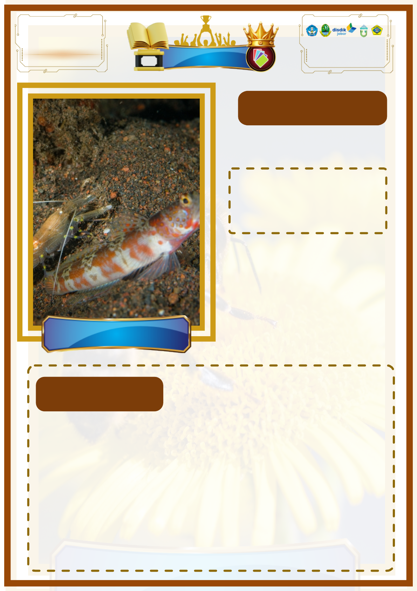

Lebah dan Bunga
Damay Class Champion
DC
C
EKOSISTEM
Created By : Sofyan
PROJEK
ILMU PNGETAHUAN ALAM & SOSIAL
Kartu Simbiosis
Udang yang hampir buta menggali liang sebagai
tempat tinggal. Ikan gobi yang memiliki
penglihatan baik akan berjaga di pintu liang dan
memberi sinyal jika ada bahaya, sehingga keduanya
mendapatkan tempat tinggal yang aman.
PENJELASAN
JENIS SIMBIOSIS
MUTUALISME
Jenis Simbiosis Dimana dua
Jenis Simbiosis Dimana dua
pihak saling mendapatkan
pihak saling mendapatkan
keuntungan
keuntungan
Ikan Gobi dan Udang